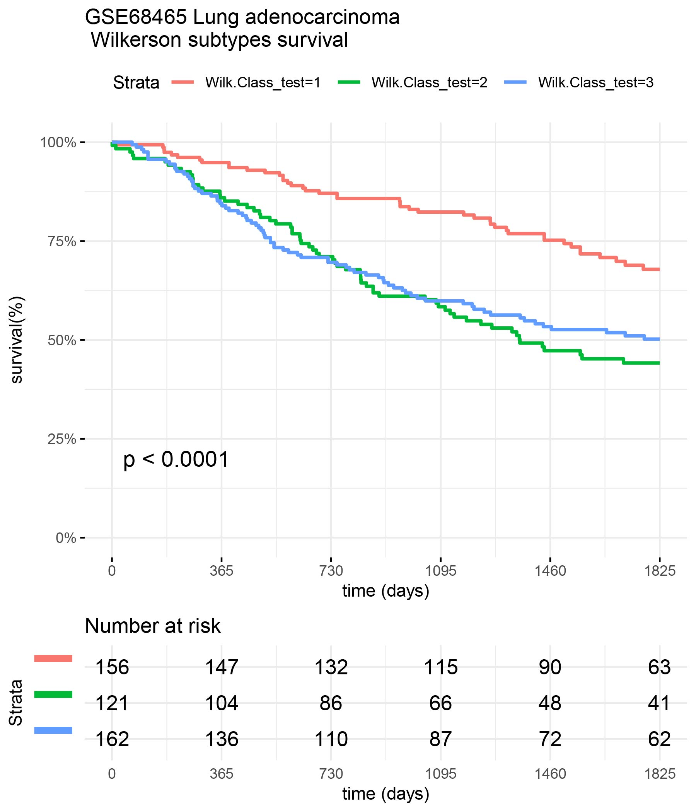

GalgoR user Guide
Martin E. Guerrero-Gimenez
Laboratory of Oncology, Institute of Medicine and Experimental Biology of Cuyo (IMBECU), National Scientific and Technical Research Council (CONICET), Mendoza, Argentina.mguerrero@mendoza-conicet.gob.ar
Juan Manuel Fernandez-Muñoz
Laboratory of Oncology, Institute of Medicine and Experimental Biology of Cuyo (IMBECU), National Scientific and Technical Research Council (CONICET), Mendoza, Argentina.Carlos A. Catania
Engineering School, National University of Cuyo, Mendoza, Argentina.2020-06-01
Source:vignettes/Galgo_vignette.Rmd
Galgo_vignette.RmdAbstract
We report a novel method to identify specific transcriptomic phenotypes based on an elitist non-dominated sorting genetic algorithm that combines the advantages of clustering methods and the exploratory properties of genetic algorithms to discover biologically and clinically relevant molecular subtypes in different cancers.
Overview
In the new era of omics data, precision medicine has become the new paradigm of cancer treatment. Among all available omics techniques, gene expression profiling, in particular, has been increasingly used to classify tumor subtypes with different biological behavior. Cancer subtype discovery is usually approached from two possible perspectives:
- Using the molecular data alone with unsupervised techniques such as clustering analysis.
- Using supervised techniques focusing entirely on survival data.
The problem of finding patients subgroups with survival differences while maintaining cluster consistency could be viewed as a bi-objective problem, where there is a trade-off between the separability of the different groups and the ability of a given signature to consistently distinguish patients with different clinical outcomes. This gives rise to a set of optimal solutions, also known as Pareto-optimal solutions. To overcome these issues, we combined the advantages of clustering methods for grouping heterogeneous omics data and the search properties of genetic algorithms in galgoR: A flexible yet robust multi-objective meta-heuristic for disease subtype discovery based on an elitist non-dominated sorting genetic algorithm (NSGA-II), driven by the underlying premise of maximizing survival differences between groups while getting high consistency and robustness of the clusters obtained.
Algorithm
In the galgoR package, the NSGA-II framework was used for finding multiple Pareto-optimal solutions to classify patients according to their gene expression patterns. Basically, NSGA-II starts with a population of competing individuals which are evaluated under a set of fitness functions that estimate the survival differences and cohesiveness of the different transcriptomic groups. Then, solutions are ranked and sorted according to their non-domination level which will affect the way they are chosen to be submitted to the so-called “evolutionary operators” such as crossover and mutation. Once a set of well-suited solutions are selected and reproduced, a new offspring of individuals composed of a mixture of the “genetic information” of the parents is obtained. Parents and offspring are pooled and the best-ranked solutions are selected and passed to the next generation which will start over the same process again.
Installation
galgoR library
To install galgoR package, start R and enter:
devtools::install_github("https://github.com/harpomaxx/galgo") library(galgoR)
Examples datasets
To standardize the structure of genomic data, we use the ExpressionSet structure for the examples given in this guide. The ExpressionSet objects can hold different types of data in a single structure but in this case we opted for using a simplified format to facilitate the example to those not familiar with the Biobase package. The ExpressionSet objects are formed mainly by:
- A matrix of genetic expression, usually derived from microarray or RNAseq experiments.
- Phenotypic data, where we find information on the samples (condition, status, treatment, survival, and other covariates).
- Finally, these objects can also contain Annotations and feature Meta-data.
To start testing galgoR, the package contains two reduced lung adenocarcinoma gene expression datasets (TCGA and GSE68465), that can be download using the function use_rna_luad(). Additionally, It also contains the Wilkerson’s centroids to perform lung adenocarcinoma sample classification.
rna_luad<- use_rna_luad() TCGA<- rna_luad$TCGA #Access TCGA dataset GSE68465<- rna_luad$GSE68465 #Access GSE68465 dataset #To access gene expression data TCGA_expr<- TCGA$expression_data #To access feature data TCGA_features<- TCGA$feature_data #To access clinical data TCGA_clinic <- TCGA$pheno_data #To get wilkerson centroids WilkCentroids <- rna_luad$WilkCentroids
Examples
Run galgo()
The main function in this package is galgo(). It accepts an expression matrix and survival object to find robust gene expression signatures related to a given outcome. This function contains some parameters that can be modified, according to the characteristics of the analysis to be performed.
Setting parameters
The principal parameters are:
- population: a number indicating the number of solutions in the population of solutions that will be evolved
- generations: a number indicating the number of iterations of the galgo algorithm
- nCV: number of cross-validation sets
- usegpu: logical default to FALSE, set to TRUE if you wish to use gpu computing (gpuR package must be properly installed and loaded)
- distancetype: character, it can be ‘pearson’ (centered pearson), ‘uncentered’ (uncentered pearson), ‘spearman’ or ‘euclidean’
- TournamentSize: a number indicating the size of the tournaments for the selection procedure
- period: a number indicating the outcome period to evaluate the RMST
population <- 30 # For testing reasons it is set to a low number but ideally should be above 100 generations <-15 # For testing reasons it is set to a low number but ideally should be above 150 nCV <- 5 distancetype <- "pearson" TournamentSize <- 2 period <- 1825
Expression matrix
Create an expression matrix for the TCGA_LUAD data example.
TCGA_expr <- rna_luad$TCGA$expression_matrix
Survival Object
The ‘OS’ object is created by the Surv() function of the survival package. This uses phenotypic data that are contained in the TCGA dataset.
TCGA_clinic <- rna_luad$TCGA$pheno_data OS <- survival::Surv(time=TCGA_clinic$time,event=TCGA_clinic$status)
Run Galgo algorithm
output <- galgoR::galgo(generations = generations, population = population, prob_matrix = TCGA_expr, OS = OS, nCV = nCV, distancetype = distancetype, TournamentSize = TournamentSize, period = period) print(class(output))
#> [1] "galgo.Obj"
#> attr(,"package")
#> [1] "galgoR"Galgo Object
The output of the galgo() function is an object of type ‘galgo.Obj’ that has two slots with the elements:
- Solutions
- ParetoFront.
Solutions
Is a l x (n + 5) matrix where n is the number of features evaluated and l is the number of solutions obtained.
- The submatrix l x n is a binary matrix where each row represents the chromosome of an evolved solution from the solution population, where each feature can be present (1) or absent (0) in the solution.
- Column n+1 represent the k number of clusters for each solutions
- Column n+2 shows the SC Fitness
- Column n+3 represent Survival Fitness values
- Column n+4 shows the solution rank
- Column n+5 represent the crowding distance of the solution in the final pareto front
ParetoFront
Is a list of length equal to the number of generations run in the algorithm. Each element is a l x 2 matrix where l is the number of solutions obtained and the columns are the SC Fitness and the Survival Fitness values respectively.
For easier interpretation of the ‘galgo.Obj’, the output can be transformed to a List or to a DataFrame objects.
toList() function
This function restructurates a galgo.Obj to a more easy to understand an use list. This output is particularly useful if one wants to select a given solution and use its outputs in a new classifier. The output of type list has a length equals to the number of solutions obtained by the galgo algorithm.
Basically this output is a list of lists, where each element of the output is named after the solution’s name (solution.n, where n is the number assigned to that solution), and inside of it, it has all the constituents for that given solution with the following structure:
- solution.n$Genes: A vector of the features included in the solution
- solution.n$k: The number of partitions found in that solution
- solution.n$SC.Fit: The average silhouette coefficient of the partitions found
- solution.n$Surv.Fit: The survival fitnes value
- solution.n$Rank: The solution rank
- CrowD: The solution crowding distance related to the rest of the solutions
outputList <- toList(output) head(names(outputList)) #> [1] "Solution.1" "Solution.2" "Solution.3" "Solution.4" "Solution.5" #> [6] "Solution.6"
To evaluate the structure of the first solution we can run:
outputList[["Solution.1"]] #> $Genes #> [1] "ECT2" "PBK" "GINS1" "H2AFZ" "CLEC3B" "CLDN18" #> [7] "SNRPG" "SEC23A" "FBP1" "NDUFS1" "PRKDC" "CD4" #> [13] "FOLR2" "ALOX5" "LGALS9" "LPXN" "MUC4" "PGC" #> [19] "SFTPB" "TDO2" "TMEM45A" "ADAMDEC1" "TMEM161A" "LRP6" #> [25] "ANXA4" "PLEC" "PSMD9" "LPIN1" "ZNF606" "TMEM184B" #> [31] "PORCN" "SCNN1G" "HNRNPH1" "ZNF304" "PDCL3" "AGA" #> [37] "FANCA" "GAPDH" "BAALC" "EEF1B2" "PIK3IP1" "ALDH1L1" #> [43] "GNAI1" "MTSS1L" "AREL1" "ASB4" "MAPK6" "OGDHL" #> [49] "MTERF1" "RWDD1" "SLC25A40" "SNX7" "MCM5" "KIF16B" #> [55] "RAC1" "LRRC37A" "ERCC3" "MED31" "WFDC1" "BBS9" #> [61] "TLR1" "TNNT2" "CCT8" "ALPK3" "RPS27" "SLC39A8" #> [67] "SIM2" "IL1RN" "ADTRP" "RMND5A" "RAB11A" "LARP7" #> [73] "EGLN1" "SPAG16" "ATP10D" "GM2A" "RNF139" "GTF2H3" #> [79] "BASP1" "FHL1" "IFT22" "RPSA" "PPIF" "YEATS4" #> [85] "PTPN7" "RRP9" "MUTYH" "KAT8" "ECD" "GPRC5D" #> [91] "MPHOSPH9" "PRR5" "TMEM70" "KCTD7" "SLC8A1" "NOP2" #> [97] "CCNT2" "COQ8B" "ITGA2" "CPOX" "PCDHB12" "HSPB2" #> [103] "ETV5" "BTK" "RNF31" "PWP1" "B4GALNT1" "SELENOW" #> [109] "INO80B" "TESK2" #> #> $k #> [1] 2 #> #> $SC.Fit #> [1] 0.1716594 #> #> $Surv.Fit #> [1] 211.5115 #> #> $rank #> [1] 1 #> #> $CrowD #> [1] Inf
toDataFrame() function
The current function restructurates a galgo.Obj to a more easy to understand an use data.frame. The output data.frame has m x n dimensions, were the rownames (m) are the solutions obtained by the galgo algorithm. The columns has the following structure:
- Genes: The features included in each solution in form of a list
- k: The number of partitions found in that solution
- SC.Fit: The average silhouette coefficient of the partitions found
- Surv.Fit: The survival fitnes value
- Rank: The solution rank
- CrowD: The solution crowding distance related to the rest of the solutions
outputDF <- toDataFrame(output) head(outputDF) #> Genes k SC.Fit Surv.Fit Rank CrowD #> Solutions.1 ECT2, PB.... 2 0.1716594 211.5115 1 Inf #> Solutions.2 MAD2L1, .... 10 0.0248802 484.6104 1 Inf #> Solutions.3 TOP2A, S.... 3 0.1006130 310.2462 1 0.4842113 #> Solutions.4 PBK, GIN.... 2 0.1663238 249.3958 1 0.3459966 #> Solutions.5 MAD2L1, .... 2 0.1282477 284.6221 1 0.3034071 #> Solutions.6 ECT2, PB.... 5 0.0702194 335.8719 1 0.2925374
plot_pareto()
Once we obtain the galgo.obj from the output of galgo() we can plot the obtained Pareto front and see how it evolved trough the tested number of generations
plot_pareto(output)

Case study
Lung adenocarcinoma (LUAD) is one of the most common types of cancer and, to date, still presents high mortality rates. Currently, numerous molecular alteration for this type of cancer are well known but, unlike breast cancer, very few transcriptomic signatures have been developed for this type of cancer. In this regards, Wilkerson’s et al. have proposed a transcriptomic classification into three different LUAD molecular subtypes (Bronchoid, Magnoid, and Squamoid) which recapitulates naturally-occurring gene expression patterns that encompass different functional pathways and patient outcomes.
Data Preprocessing
To evaluate Galgo’s performance along with Wilkerson’s classification, we used two already scaled and reduced lung adenocarcinoma gene expression datasets included in the package (TCGA and GSE68465) that can be download using the function use_rna_luad(). Aditionally, It also contains the Wilkerson’s centroids to perform lung adenocarcinoma sample classification. Wilkerson’s centroids were used to classify samples according to their corresponding molecular subtype.
Lung adenocarcinoma classification
The scaled expression values of each patient are compared with the prototypical centroids using Pearson’s correlation coefficient and the closest centroid to each patient is used to assign the corresponding labels.
rna_luad<-use_rna_luad() #The expression of the toy datasets are already scaled #The TCGA dataset will be used as training set train_expression <- rna_luad$TCGA$expression_matrix train_clinic<- rna_luad$TCGA$pheno_data train_features<- rna_luad$TCGA$feature_data train_surv<- Surv(time=train_clinic$time,event=train_clinic$status) #The TCGA dataset will be used as test set test_expression <- rna_luad$GSE68465$expression_matrix test_clinic<- rna_luad$GSE68465$pheno_data test_features<- rna_luad$GSE68465$feature_data test_surv<- Surv(time=test_clinic$time,event=test_clinic$status) #We change the rownames to be gene Symbol insted of Gene Id. rownames(train_expression)<- train_features$gene rownames(test_expression)<- test_features$gene #Wilkerson's centroids centroids<- rna_luad$WilkCentroids #Extract features from both data.frames inBoth<- Reduce(intersect, list(rownames(train_expression),rownames(centroids))) #Classify samples Wilk.Class_train<- classify(train_expression[inBoth,],centroids[inBoth,]) table(Wilk.Class_train) #> Wilk.Class_train #> 1 2 3 #> 219 115 136 Wilk.Class_test<- classify(test_expression[inBoth,],centroids[inBoth,]) table(Wilk.Class_test) #> Wilk.Class_test #> 1 2 3 #> 156 121 162
Once the patients are classified according to their closest centroids, we can now evaluate the survival curves for the different types in each of the datasets
Survival of TCGA patients
library(survival) library(survminer) library(ggplot2) surv_formula <- as.formula("Surv(train_clinic$time,train_clinic$status)~ Wilk.Class_train") tumortotal1 <- surv_fit(surv_formula,data=train_clinic) tumortotal1diff <- survdiff(surv_formula) tumortotal1pval<- pchisq(tumortotal1diff$chisq, length(tumortotal1diff$n) - 1, lower.tail = FALSE) p<-ggsurvplot(tumortotal1,data=train_clinic,risk.table=TRUE,pval=TRUE,palette="dark2", title="TCGA Lung adenocarcinoma \n Wilkerson subtypes survival", surv.scale="percent", conf.int=FALSE, xlab="time (days)", ylab="survival(%)", xlim=c(0,1825),break.time.by = 365, ggtheme = theme_minimal(), risk.table.y.text.col = TRUE, risk.table.y.text = FALSE,censor=FALSE) print(p)

Survival of GSE68465 patients
surv_formula <- as.formula("Surv(test_clinic$time,test_clinic$status)~ Wilk.Class_test") tumortotal2 <- surv_fit(surv_formula,data=test_clinic) tumortotal2diff <- survdiff(surv_formula) tumortotal2pval<- pchisq(tumortotal2diff$chisq, length(tumortotal2diff$n) - 1, lower.tail = FALSE) p<-ggsurvplot(tumortotal2,data=test_clinic,risk.table=TRUE,pval=TRUE,palette="dark2", title="GSE68465 Lung adenocarcinoma \n Wilkerson subtypes survival", surv.scale="percent", conf.int=FALSE, xlab="time (days)", ylab="survival(%)", xlim=c(0,1825),break.time.by = 365, ggtheme = theme_minimal(), risk.table.y.text.col = TRUE, risk.table.y.text = FALSE,censor=FALSE) print(p)

Find lung adenocarcinoma gene signatures with GalgoR
Now we run Galgo to find cohesive and clinically meaningful signatures for LUAD using TCGA data as training set and GSE68465 data as test set
Set configuration parameters
population <- 150 generations <-50 nCV <- 5 distancetype <- "pearson" TournamentSize <- 2 period <- 1825 usegpu <- TRUE
Run Galgo on the training set
output= galgoR::galgo(generations = generations, population = population,prob_matrix = train_expression, OS=train_surv,usegpu=usegpu,nCV= nCV, distancetype=distancetype, TournamentSize=TournamentSize, period=period)
#> [1] "galgo.Obj"
#> attr(,"package")
#> [1] "galgoR"Analyzing Galgo results

Summary of the results
output_df<- toDataFrame(output) NonDom_solutions<- output_df[output_df$Rank==1,] # N of non-dominated solutions nrow(NonDom_solutions) #> [1] 17 # N of partitions found table(NonDom_solutions$k) #> #> 2 3 4 8 #> 12 2 1 2 #Average N of genes per signature mean(unlist(lapply(NonDom_solutions$Genes,length))) #> [1] 82.17647 #SC range range(NonDom_solutions$SC.Fit) #> [1] 0.0799691 0.2745406 # Survival fitnesss range range(NonDom_solutions$Surv.Fit) #> [1] 224.8008 533.7608
Select best performing solutions
Now we select the best performing solutions for each number of partitions (k) according to C.Index
RESULT<- non_dominated_summary(output=output,OS=train_surv, prob_matrix= train_expression, distancetype =distancetype, usegpu= usegpu ) best_sol=NULL for(i in unique(RESULT$k)){ best_sol=c(best_sol,RESULT[RESULT$k==i,"solution"][which.max(RESULT[RESULT$k==i,"C.Index"])]) } print(best_sol) # [1] "Solutions.1" "Solutions.7" "Solutions.3" "Solutions.9"
Create prototypic centroids
Now we create the prototypic centroids of the selected solutions
CentroidsList <- create_centroids(output, solution.names = best_sol, train.set = train_expression)
Test Galgo signatures in a test set
We will test the Galgo signatures found with the TCGA training set in an independent test set
testSet=rna_luad$GSE68465 prob_matrix_test= testSet$expression_matrix clinical_test=testSet$pheno_data OS_test=Surv(time=clinical_test$time,event=clinical_test$status)
Classify train and test set into galgoR subtypes
train_classes<- classify_multiple(prob_matrix=train_expression,centroid.list= CentroidsList, distancetype = distancetype) test_classes<- classify_multiple(prob_matrix=test_expression,centroid.list= CentroidsList, distancetype = distancetype)
Calculate train and test set C.Index
To calculate the train and test C.Index, the risk coefficients are calculated for each subclass in the training set and are then used to predict the risk of the different groups in the test set. This is particularly important for signatures with high number of partitions, were the survival differences of different groups might overlap and change their relative order, which is of great importance in the C.Index calculation.
Prediction.models<- list() for(i in best_sol){ OS<- train_surv predicted_class<- as.factor(train_classes[,i]) predicted_classdf <- as.data.frame(predicted_class) colnames(predicted_classdf)<- i surv_formula <- as.formula(paste0("OS~ ",i)) coxsimple=coxph(surv_formula,data=predicted_classdf) Prediction.models[[i]]<- coxsimple }
Calculate C.Index for training and test set using the prediction models of the training set
C.indexes<- data.frame(train_CI=rep(NA,length(best_sol)),test_CI=rep(NA,length(best_sol))) rownames(C.indexes)<- best_sol for(i in best_sol){ predicted_class_train<- as.factor(train_classes[,i]) predicted_class_train_df <- as.data.frame(predicted_class_train) colnames(predicted_class_train_df)<- i CI_train<- concordance.index(predict(Prediction.models[[i]],predicted_class_train_df),surv.time=train_surv[,1],surv.event=train_surv[,2],outx=FALSE)$c.index C.indexes[i,"train_CI"]<- CI_train predicted_class_test<- as.factor(test_classes[,i]) predicted_class_test_df <- as.data.frame(predicted_class_test) colnames(predicted_class_test_df)<- i CI_test<- concordance.index(predict(Prediction.models[[i]],predicted_class_test_df),surv.time=test_surv[,1],surv.event=test_surv[,2],outx=FALSE)$c.index C.indexes[i,"test_CI"]<- CI_test } print(C.indexes) # train_CI test_CI #Solutions.1 0.6079561 0.5685536 #Solutions.7 0.6034458 0.6025023 #Solutions.3 0.6147336 0.6060875 #Solutions.9 0.6024516 0.5916318 best_signature<- best_sol[which.max(C.indexes$test_CI)] print(best_signature) # "Solutions.3"
Evaluate prediction survival of Galgo signatures
We test best galgo signature with training and test sets
train_class <- train_classes[,best_signature] surv_formula <- as.formula("Surv(train_clinic$time,train_clinic$status)~ train_class") tumortotal1 <- surv_fit(surv_formula,data=train_clinic) tumortotal1diff <- survdiff(surv_formula) tumortotal1pval<- pchisq(tumortotal1diff$chisq, length(tumortotal1diff$n) - 1, lower.tail = FALSE) p<-ggsurvplot(tumortotal1,data=train_clinic,risk.table=TRUE,pval=TRUE,palette="dark2", title="TCGA Lung adenocarcinoma \n Galgo subtypes survival", surv.scale="percent", conf.int=FALSE, xlab="time (days)", ylab="survival(%)", xlim=c(0,1825),break.time.by = 365, ggtheme = theme_minimal(), risk.table.y.text.col = TRUE, risk.table.y.text = FALSE,censor=FALSE) print(p)

test_class <- test_classes[,best_signature] surv_formula <- as.formula("Surv(test_clinic$time,test_clinic$status)~ test_class") tumortotal1 <- surv_fit(surv_formula,data=test_clinic) tumortotal1diff <- survdiff(surv_formula) tumortotal1pval<- pchisq(tumortotal1diff$chisq, length(tumortotal1diff$n) - 1, lower.tail = FALSE) p<-ggsurvplot(tumortotal1,data=test_clinic,risk.table=TRUE,pval=TRUE,palette="dark2", title="GSE68465 Lung adenocarcinoma \n Galgo subtypes survival", surv.scale="percent", conf.int=FALSE, xlab="time (days)", ylab="survival(%)", xlim=c(0,1825),break.time.by = 365, ggtheme = theme_minimal(), risk.table.y.text.col = TRUE, risk.table.y.text = FALSE,censor=FALSE) print(p)

Comparison of Galgo vs Wilkerson classifiers
Compare Wilkerson classification vs Galgo classification in the GSE68465 (test) dataset
surv_formula1 <- as.formula("Surv(test_clinic$time,test_clinic$status)~ test_class") tumortotal1 <- surv_fit(surv_formula1,data=test_clinic) tumortotal1diff <- survdiff(surv_formula1) tumortotal1pval<- pchisq(tumortotal1diff$chisq, length(tumortotal1diff$n) - 1, lower.tail = FALSE) surv_formula2 <- as.formula("Surv(test_clinic$time,test_clinic$status)~ Wilk.Class_test") tumortotal2 <- surv_fit(surv_formula2,data=test_clinic) tumortotal2diff <- survdiff(surv_formula2) tumortotal2pval<- pchisq(tumortotal1diff$chisq, length(tumortotal2diff$n) - 1, lower.tail = FALSE) SURV=list(GALGO=tumortotal1,Wilk=tumortotal2 ) COLS=c(1:8,10) par(cex=1.35, mar=c(3.8, 3.8, 2.5, 2.5) + 0.1) p=ggsurvplot(SURV,combine=TRUE,data=test_clinic,risk.table=TRUE,pval=TRUE,palette="dark2", title="Galgo vs. Wilkerson subtypes \n Lung survival comparison", surv.scale="percent", conf.int=FALSE, xlab="time (days)", ylab="survival(%)", xlim=c(0,period),break.time.by = 365, ggtheme = theme_minimal(), risk.table.y.text.col = TRUE, risk.table.y.text = FALSE,censor=FALSE) print(p)
 # Session info
# Session info
sessionInfo() #> R version 3.6.1 (2019-07-05) #> Platform: x86_64-pc-linux-gnu (64-bit) #> Running under: Ubuntu 16.04.5 LTS #> #> Matrix products: default #> BLAS: /usr/lib/libblas/libblas.so.3.6.0 #> LAPACK: /usr/lib/lapack/liblapack.so.3.6.0 #> #> locale: #> [1] LC_CTYPE=en_US.UTF-8 LC_NUMERIC=C #> [3] LC_TIME=en_US.UTF-8 LC_COLLATE=en_US.UTF-8 #> [5] LC_MONETARY=en_US.UTF-8 LC_MESSAGES=en_US.UTF-8 #> [7] LC_PAPER=en_US.UTF-8 LC_NAME=C #> [9] LC_ADDRESS=C LC_TELEPHONE=C #> [11] LC_MEASUREMENT=en_US.UTF-8 LC_IDENTIFICATION=C #> #> attached base packages: #> [1] stats graphics grDevices utils datasets methods base #> #> other attached packages: #> [1] galgoR_0.2.0 survival_2.44-1.1 #> #> loaded via a namespace (and not attached): #> [1] Rcpp_1.0.3 rstudioapi_0.11 knitr_1.25 magrittr_1.5 #> [5] splines_3.6.1 MASS_7.3-51.4 lattice_0.20-38 R6_2.4.1 #> [9] rlang_0.4.6 stringr_1.4.0 tools_3.6.1 grid_3.6.1 #> [13] xfun_0.10 htmltools_0.4.0 yaml_2.2.0 assertthat_0.2.1 #> [17] digest_0.6.25 rprojroot_1.3-2 pkgdown_1.5.1 crayon_1.3.4 #> [21] Matrix_1.2-17 fs_1.3.1 memoise_1.1.0 evaluate_0.14 #> [25] rmarkdown_2.1 stringi_1.4.3 compiler_3.6.1 desc_1.2.0 #> [29] backports_1.1.5